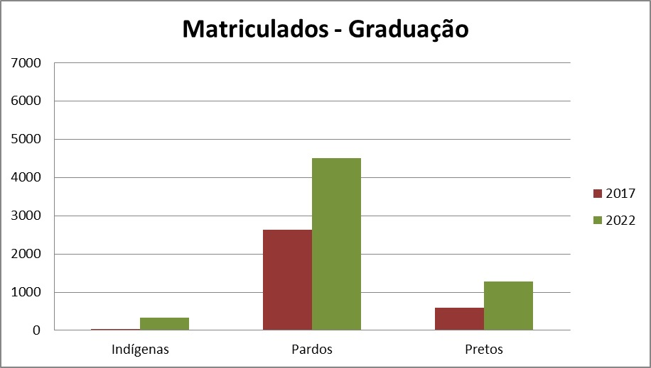
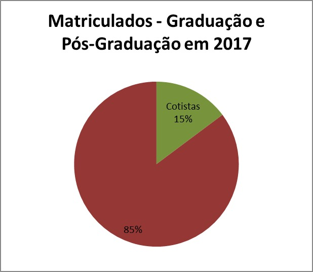
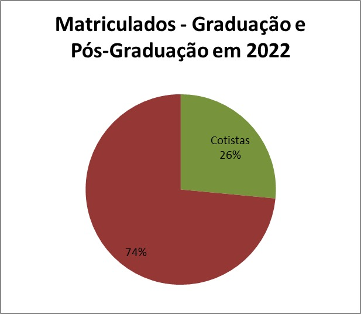
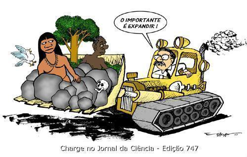
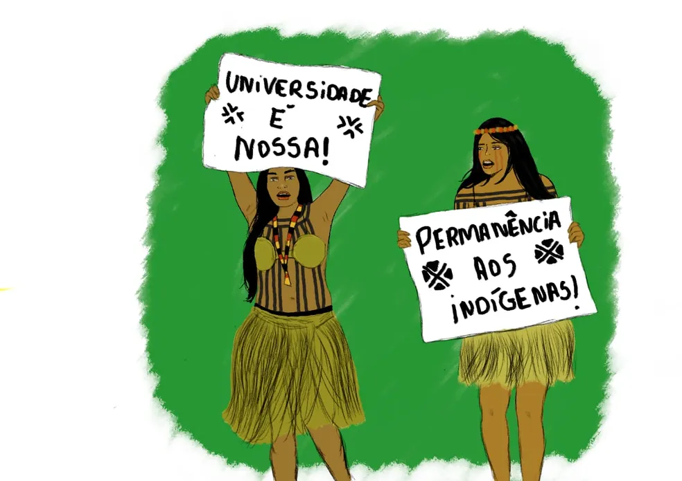
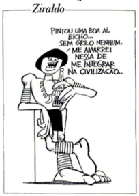
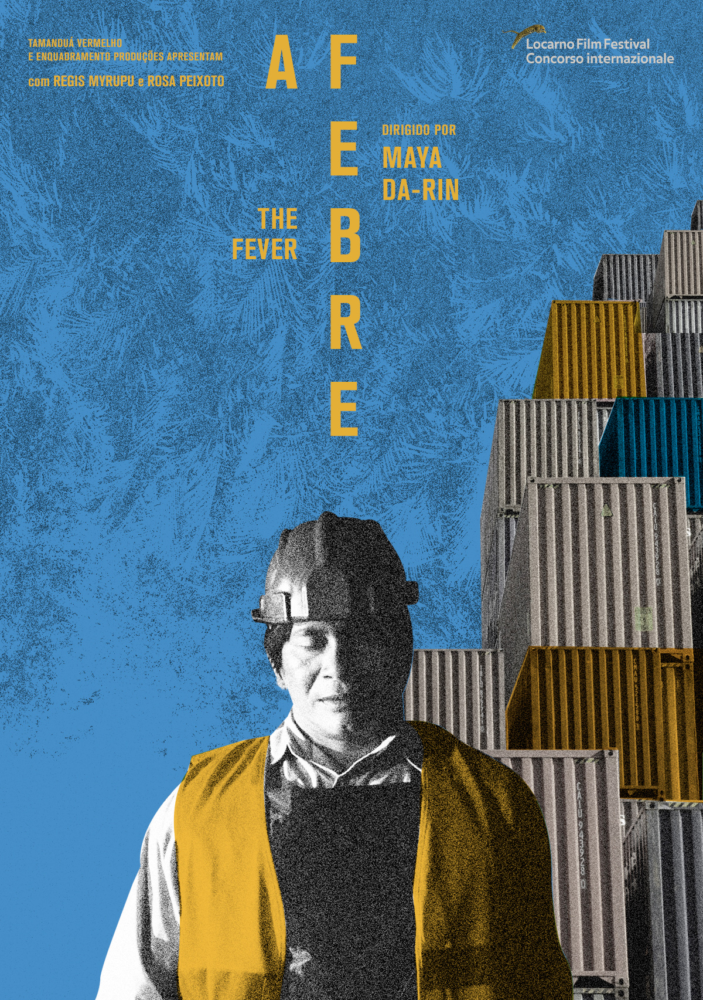

Divulgação de Informações Acadêmicas
Vídeos
Série Índios no Brasil - episódio Quem são eles?
LIVE: A temática indígena na sala de aula: sugestões para o ensino
Ciência indígena e crise climática | Sistema Agrícola Tradicional do Rio Negro
The case to recognise Indigenous knowledge as science | Albert Wiggan | TEDxSydney
Gráficos
|  | |
|  |  |
A lei das cotas étnico-raciais (Lei 12.711/12) – que deverá passar por revisão no Congresso no segundo
semestre deste
ano – alterou drasticamente o perfil demográfico da população acadêmica na Unicamp. De acordo com dados
da Diretoria
Acadêmica, o número de estudantes pretos, pardos e indígenas cresceu 91% nos últimos cinco anos na
Universidade.
Em 2017, quando a lei foi implementada pelo Conselho Universitário (Consu), a Unicamp registrou a
matrícula de 30.264
alunos nos cursos de Graduação e Pós-Graduação. Destes, 4.484 se autodeclararam pretos, pardos e
indígenas – o
equivalente a 14,8% do total de matriculados. Em 2022, esse grupo conta com 8.575 estudantes – ou 26,5%
do total de
matriculados. Fonte: https://www.unicamp.br/unicamp/index.php/ju/noticias/2022/07/20/numero-de-cotistas-aumenta-91-em-cinco-anos-na-unicamp
Brasil tem 1,7 milhão de indígenas e mais da metade deles vive na Amazônia Legal A população indígena do país chegou a 1.693.535 pessoas em 2022, o que representa 0,83% do total de habitantes. Um pouco mais da metade (51,2%) estava concentrada na Amazônia Legal. Em 2010, quando foi realizado o Censo anterior, foram contados 896.917 indígenas no país. Isso equivale a um aumento de 88,82% em 12 anos, período em que esse contingente quase dobrou. O crescimento do total da população nesse mesmo período foi de 6,5%. Fonte: https://agenciadenoticias.ibge.gov.br/agencia-noticias/2012-agencia-de-noticias/noticias/37565-brasil-tem-1-7-milhao-de-indigenas-e-mais-da-metade-deles-vive-na-amazonia-legal
Noticias
Canais de civilização anterior aos incas podem solucionar a crise hídrica de Lima
Estudo mostrou que sistema de aquedutos do povo Wari construído nos Andes há 1500 anos pode reduzir déficit de água em 60% - é a opção mais eficaz para acabar com o racionamento.
6 invenções de indígenas americanos que fazem parte do nosso dia a dia
Acredita-se que os primeiros habitantes da América tenham chegado ao continente há cerca de 14 mil anos. Com a migração, tem início também um processo de desenvolvimento tecnológico a partir dos recursos disponíveis e da realidade local. Desde o Ártico, onde os esquimós começaram a habitar as regiões mais geladas, até os poderosos impérios inca e asteca, avanços importantes no campo da engenharia, da arquitetura e da arte surgiram. Muitas das invenções desenvolvidas ao longo dos séculos foram substituídas pela tecnologia importada após a chegada de Cristóvão Colombo, no final do século 15. Algumas, contudo, foram mantidas e, em pleno século 21, continuam sendo parte da vida diária não só no continente americano.
Líder indigena é escolhido para a academia de Ciência
O líder indígena Davi Kopenawa Yanomami, 64, costuma ensinar que embaixo da terra estava escondida a xawara. No saber Yanomami, a xawara representa todos os males enterrados pela Terra Mãe ao criar a humanidade. A busca do homem branco por riquezas, porém, liberou o que estava trancafiado, iniciando a destruição do planeta e propagação das doenças, como a malária e a covid-19.
Com apoio de cientistas, Índigenas pedem 80% da Amazônia preservada até 2025
Se desmatamento passar de 20%, floresta pode atingir em 15 anos um ponto de não retorno.
Vestibular Indígena 2023 tem recorde de inscritos
O Vestibular Indígena Unicamp UFSCar 2023 teve recorde de inscritos, com 3.480 candidatos. Essa é a segunda edição d a seleção unificada entre a Universidade Federal de São Carlos e a Universidade Estadual de Campinas para o ingresso de estudantes indígenas em diferentes cursos de graduação nas duas universidades. As inscrições gratuitas foram encerradas no dia 30 de novembro. Na edição passada, inscreveram-se 2.805 candidatos. Na UFSCar, esta é a 16ª edição da modalidade de ingresso para estudantes indígenas e, na Unicamp, a quinta. No total, são oferecidas 260 vagas destinadas a estudantes indígenas brasileiros que cursaram escolas públicas, 130 na Unicamp e 130 na UFSCar.
Charges
Bolsonaro diz que projeto para exploração de minério em terras indígenas está pronto
|  |
Povos indígenas da PB lutam pela sobrevivência de suas tradições em meio a ataques a direitos
|  |
Ziraldo
|  |
Fonte: https://www.tecconcursos.com.br/questoes/1305918
Filmes
A Febre (2019)
|  |
Sinopse: "A Febre" (2019) é um drama brasileiro que segue a jornada de uma adolescente chamada Justine, que experimenta mudanças internas e externas durante uma festa em sua escola. O filme aborda temas de alienação, despertar sexual e busca por identidade, enquanto Justine lida com um misterioso mal-estar físico e emocional. A narrativa se desenvolve de maneira simbólica, explorando as complexidades da adolescência e da transição para a idade adulta.
Instagram voltado para divulgação de informações a respeito da cultura indígena e de questões sociais que impactam esses povos:
@povosindigenas: https://www.instagram.com/povosindigenas?igshid=Yjc0OGI0MDc4OA%3D%3D